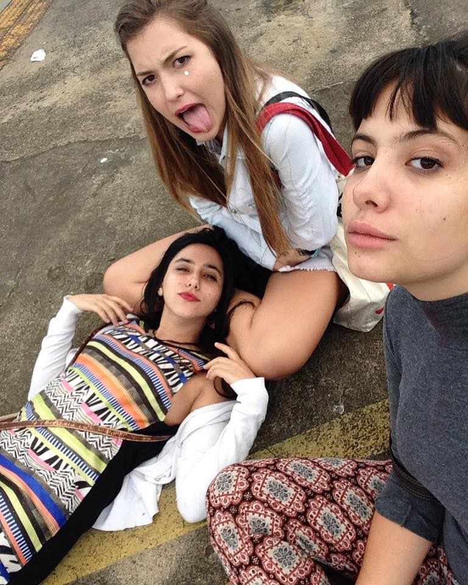
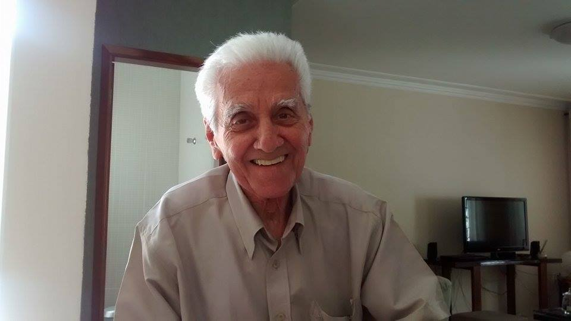

Perfil
Júlia M.
1046 pontos
"Eu mesma, Júlia Mello"
Cronograma
Grafitti Digital
Pagamento
Item 1
Adicionado 24/06/2017, 17h03

Esperando o show da Valesca!!
Ver no mapa
Adicionado 21/06/2017, 13h25:

Meu vô me trazia pra brincar nessa praça, eu gostava de desenhar amarelinha com giz na calçada. Ele ja não está mais com a gente, mas as memórias boas continuam :)
Ver no mapa
Coxinha no metrô
R$4,00
14/10/2016, às 14h58
Acessório na tenda do seu Walcir
R$14,00
14/10/2016, às 15h23